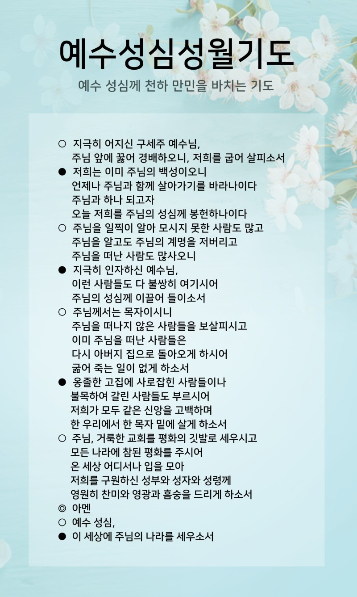

2024년 6월 사목협의회 진행 순서
예수성심성월기도
신부님 전달사항
성체안의 성장 세미나
신심분과
• 일 정 : 6월 7일(금) ~ 7월 12일(금) 매주 금요일 오후 7시
• 회 비 : 3만원 (교재비포함)
| 일정 | 주제 | 강사 | 비고 |
|---|---|---|---|
| 6월 7일 | 교회와 은총의 성사 (칠성사) | 김성대 안드레아 신부님 | 도미니코 수도회 |
| 6월 14일 | 성체성사의 기원 | 김명희 도미니카 | |
| 6월 21일 | 성찬성사의 이해 | 이상욱 엘리야 | |
| 6월 28일 | 미사를 통한 은총 | 이해봉 토마스 | |
| 7월 5일 | 미사와 안수 | 김도영 빈첸시오 신부님 | 성령쇄신봉사회 담당 |
| 7월 12일 | 성체신심의 성장 | 장영숙 크리스티나 |
6월 11일(화) 이경상바오로 주교님 마곡수명산성당 사목방문 준비
사목회장님
6월 30일(주일) 본당의 날 행사 계획(안)
| 시간 | 경기 |
|---|---|
| 13:00 - 13:40 | 대형 윷놀이 게임 |
| 13:40 - 14:00 | EVA협동공튀기기 8인용 볼바운스 게임 |
| 14:00 - 14:20 | 팀 게임으로 하는 신발 슬리퍼 던지기 게임 |
| 14:20 - 14:40 | 단체줄넘기 게임 |
| 14:40 - 15:00 | 팀전 제기차기 게임 |
| 15:00 - 15:20 | 팀전 투호게임 |
| 15:20 - 16:00 | 청백전 노래방 게임 |
| 16:00 - 16:30 | 시상식과 신부님 말씀 |
분과별 주요 진행사항
마침기도(영광송)